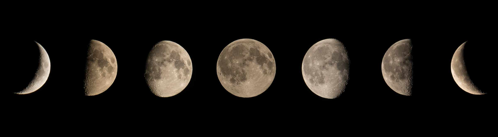

- Solar System Home
- Our Planets
- Our Moons
- Our Sun
The Moons in Our Solar System
Earth's Moon
The Moon is the Earth's only natural satellite. We know it as 'the Moon' but scientists sometimes call it Luna. The word 'lunar' means 'relating to the Moon'. The temperature on the Moon can be as low as -170 °C at night! But in the daytime it can rise to 120 °C. The Moon is the fifth largest moon in the entire Solar System. It is 3,474 km from one side to the other (its diameter). This is about a quarter of the diameter of the Earth. The distance from the Earth to the Moon is 384,400 km.

Jupiter's Moons
The gas giant planet, Jupiter has 79 moons. So far, 53 of the moons have been named, the rest are waiting for official names. Many of Jupiter's moons are recent discoveries - 61 have been found since 1999. Io, Europa, Ganymede, and Callisto are the largest of Jupiter's 79 moons. These moons are also known as the Galilean moons.
| The Galiliean Moons | |||||
|---|---|---|---|---|---|
| Distance | Radius | Mass | Orbit | Day Length | |
| from Jupiter | EM | Earth Days | Earth Days | ||
| Io | 421,600km | 1,815km | 0.15 | 1.77 | 1.77 |
| Europa | 670,900km | 1,569km | 0.008 | 3.55 | 3.55 |
| Ganymede | 1,070,000km | 2,631km | 0.025 | 7.15 | 7.15 |
| Callisto | 1,883,000km | 2,400km | 0.018 | 16.69 | 16.69 |

Saturn's Moons
Saturn has 82 moons orbiting it. Some are tiny rocks nearly 1 km across. Others are massive moon's, like Titan which is bigger than the planet Mercury. Some moons are so small that only 53 have actually been given names. One of the most famous moons of Saturn is called Enceladus. It is called the ocean moon as it has been seen spraying jets of water vapor and ice into space. It has been found to have an ocean which covers the planet hidden below a thick crust of ice. Another moon, Mimas, might also have water on its surface.